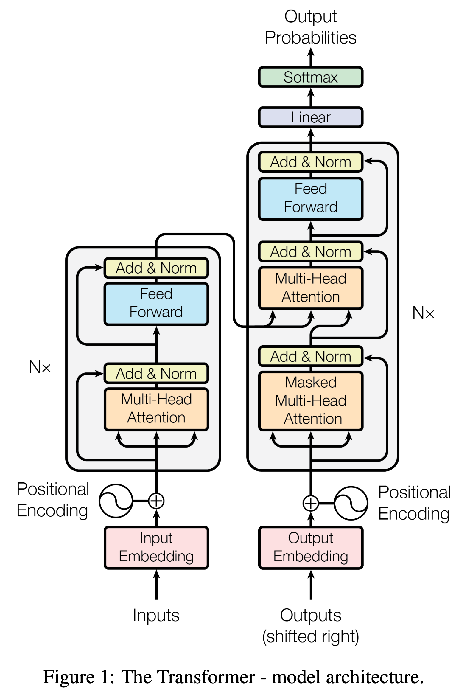
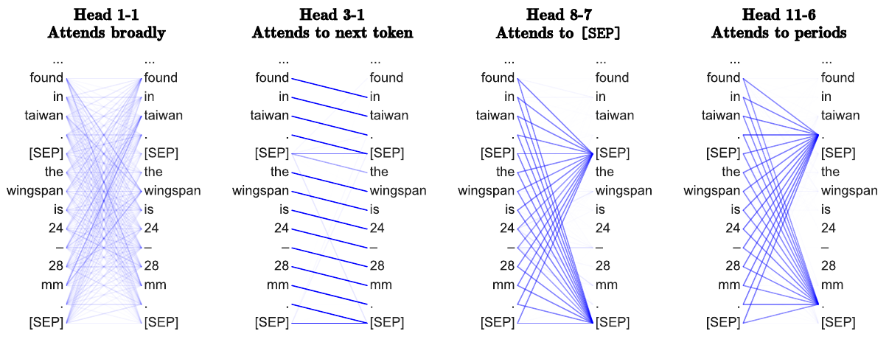
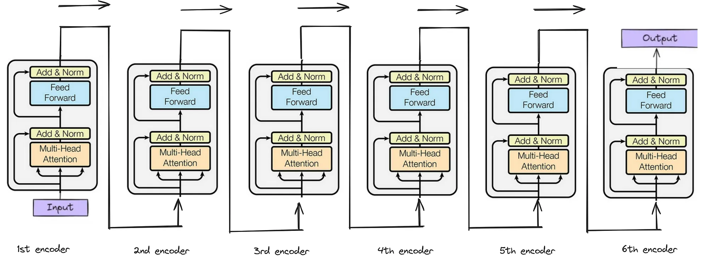
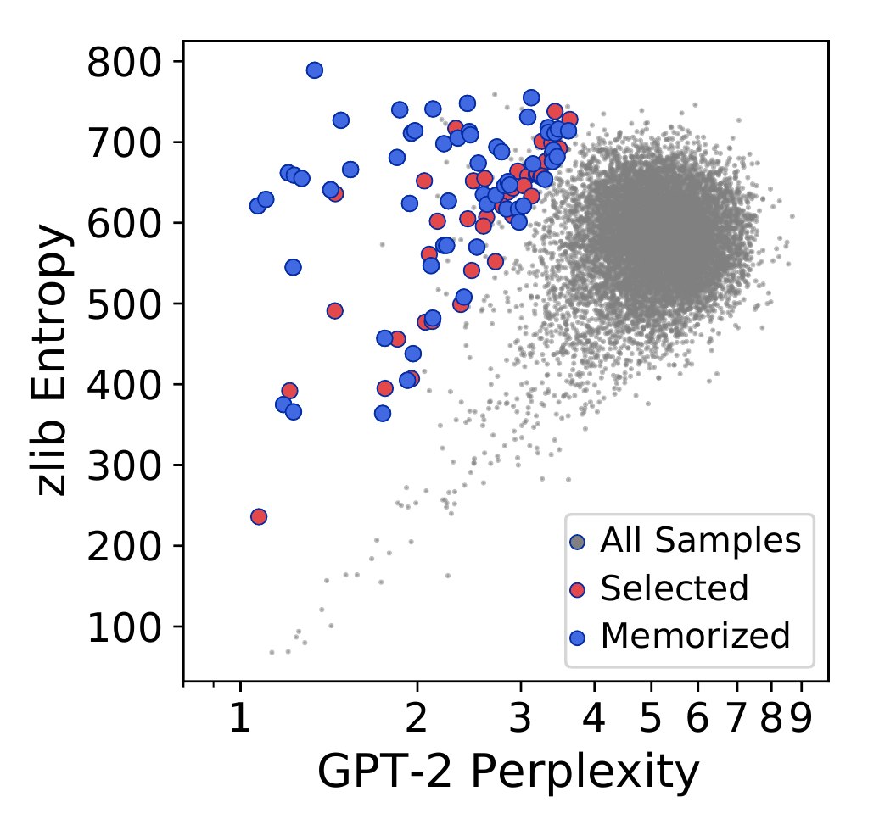

Large Language Models:
Brief Overview
Tokens, transformer, training, sampling: what privacy attacks touch
Albert No · Yonsei University
2026
Contents
Tokens and Sequences
From text to a distribution over finite strings
Why a Brief LLM Pass
Every LLM privacy attack touches one of four quantities.
- Per-token loss $-\log p_\theta(x_t \mid x_{<t})$: membership inference
- Verbatim continuation: memorization and extraction
- The sampling map logits $\to$ token: watermarking
- The conditional itself: unlearning and editing
Build all four cleanly now; the attack lectures then need no setup.
Text Is Not the Model's Input
A fixed tokenizer cuts a string into vocabulary pieces.
Vocabulary and Sequences
Definition (tokenized sequence).
Fix a finite vocabulary $\mathcal{V} = \{1,\dots,V\}$ and a deterministic tokenizer $\tau:\ \text{strings} \to \mathcal{V}^{*}$.
Typical scale: $V \approx 3\times 10^{4}$ to $2\times 10^{5}$, context $T$ up to $10^{5}$ or more.
Byte-Pair Encoding, by Example
Start from bytes; repeatedly merge the most frequent adjacent pair.
| Round | Most frequent pair | New symbol |
|---|---|---|
| 0 | bytes only | l o w e r |
| 1 | (l, o) | lo w e r |
| 2 | (lo, w) | low e r |
| 3 | (e, r) | low er |
Stop at a target vocabulary size; the merge list is then frozen forever.
Why Subwords, Not Words
Words fail
- Unbounded vocabulary
- Every typo is unknown
- Huge softmax layer
Bytes fail
- Sequences 4 times longer
- Attention cost is quadratic
- Weak units to predict
Subwords: closed vocabulary, no unknown token, sequences stay short.
Tokenization Is Already a Surface
A rare string costs many tokens, hence a large loss budget.
Memorized secrets are exactly the long, rare, high-token-count strings.
The Modeling Problem
We want a distribution over $\mathcal{V}^{T}$. A raw table is hopeless.
With $V = 5\times10^{4}$ and $T = 1000$: about $10^{4700}$ entries.
Structure is not optional. We need a factorization plus weight sharing.
Autoregressive Factorization
Proposition (chain rule).
For any distribution $p$ on $\mathcal{V}^{T}$,
No assumption is made: this is an identity, not a model class restriction.
Proof — Telescoping
Write the joint as a ratio of marginals and cancel.
Convention: $p(x_{<1}) = 1$, the empty prefix. Ratios are well defined on the support.
What the Factorization Buys
One network with weights $\theta$ supplies all $T$ conditionals.
Parameters no longer grow with $T$; only the context window does.
An LLM Is One Conditional
The whole object we study is a map prefix $\to$ point in the simplex.
Training shapes this map; sampling reads it; every attack probes it.
Decoder-Only Transformer
The architecture that realizes those conditionals
The Architecture, as Published

LLMs keep the right stack only.
- No encoder, no cross-attention
- Self-attention is causally masked
- Same block repeated $N$ times
Next slides: each box as a formula.
Tokens to Vectors
Look up an embedding, add a position signal.
Without $P_t$ the block is permutation-equivariant: word order would vanish.
Modern stacks inject position inside attention (rotary) rather than at the input.
Attention as Soft Retrieval
Each position issues a query; earlier positions offer keys and values.
Scaled Dot-Product Attention
Definition.
With $H^{(\ell)} \in \mathbb{R}^{T\times d}$ and projections $W_Q, W_K, W_V$,
Softmax acts row-wise; $M$ is the causal mask, defined shortly.
One Row, Written Out
Position $t$ mixes only what it is allowed to see.
$\alpha_{t,\cdot}$ is a probability vector over the prefix: attention is a convex combination.
Why Divide by $\sqrt{d_k}$
Take $q,k$ with i.i.d. zero-mean unit-variance coordinates.
So raw scores have scale $\sqrt{d_k}$; dividing restores unit scale.
Key trick.
Keep softmax logits $O(1)$ so the layer stays in its non-saturated regime.
Saturation Kills the Gradient
For $p = \mathrm{softmax}(z)$ the Jacobian is
As one entry of $p$ tends to $1$, every term tends to $0$.
Unscaled scores of size $\sqrt{d_k} \approx 8$ already give near one-hot rows and vanishing gradients.
The Causal Mask
$e^{-\infty} = 0$: future keys get exactly zero weight.
Why Masking Is the Whole Trick
With the mask, row $t$ of the output depends only on $x_{\le t}$.
Training is parallel over $t$; generation stays sequential. That asymmetry is the design.
Without the mask, position $t$ would peek at $x_t$ and the objective would be trivial.
Multi-Head Attention
Run $H$ attentions in parallel with $d_k = d/H$, then recombine.
Cost matches one full-width head; each head can specialize on a different relation.
What Heads Specialize On

Measured heads: broad mixing, next token, [SEP], punctuation.
Layer Normalization
Normalize each token vector across its $d$ coordinates.
Per token, not per batch: unaffected by which other sequences share the batch.
Position-Wise Feed-Forward
Widen, apply a nonlinearity, project back. Same map at every position.
Attention moves information across positions; the FFN transforms it in place.
Roughly two thirds of the parameters sit here. It is where facts are stored.
One Pre-Norm Block
Two residual sublayers, normalization before each.
Residuals give an identity path: gradients reach layer $1$ undamped.
The Full Stack
$W_U$ is the unembedding, often tied to the embedding matrix: $W_U = E^{\top}$.
Everything above the mask is a residual stream read out by one linear map.
Logits to Next-Token Distribution
Shift invariance. For any $c \in \mathbb{R}$, replacing $z_t$ by $z_t + c\mathbf{1}$ leaves $p_\theta$ unchanged.
Logits are identified only up to a constant; only differences carry meaning.
Sequential Generation

Sample, append, repeat.
Each drawn token becomes input for the next step: errors compound forward.
The Cost of Generating
Attention compares every pair of positions.
- Naive decoding recomputes the prefix: $\Theta(T^3)$ overall
- Caching $K,V$ makes each new token $\Theta(Td + d^2)$
- Cache memory grows linearly in $T$
The KV cache is why long-context serving is memory bound.
Pretraining
Cross-entropy, KL, perplexity, and what memorization costs
The Pretraining Objective
Maximize likelihood of a corpus $\mathcal{D}$; equivalently minimize per-token NLL.
One masked forward pass yields all $T$ terms, so each sequence gives $T$ training signals.
The per-example, per-token loss is the exact quantity membership inference reads.
Three Information Quantities
Definition.
For distributions $p, q$ on a finite alphabet,
Logs are natural; nats throughout. $\mathrm{KL} = 0$ exactly when $p = q$.
Cross-Entropy Splits in Two
Proposition (decomposition).
For any $p$ and any $q$ with $q_v > 0$ wherever $p_v > 0$,
Training loss $=$ irreducible entropy $+$ model error. Only the second term is learnable.
Proof — Add and Subtract
Insert $\log p_v - \log p_v$ inside the sum.
Nonnegativity of KL follows from Jensen applied to $-\log$, which is convex.
MLE Is KL Minimization
$H(p)$ does not depend on $\theta$, so minimizing loss minimizes KL alone.
A loss of zero is impossible: language itself is stochastic.
Perplexity
Definition.
The exponential of mean NLL: the geometric mean of assigned probabilities, inverted.
Reported on held-out text; comparable only across models sharing a tokenizer.
Three Facts About Perplexity
Proposition.
(iii) uses stationarity and ergodicity of the source, per token.
Proof — All Three
(i) Each $\log p_\theta \le 0$, so the mean NLL is $\ge 0$ and its exponential is $\ge 1$.
(iii) The mean NLL converges to $H(p, p_\theta)$; apply the decomposition.
Perplexity as Branching Factor
$\mathrm{PPL} = k$ reads as "$k$ equally likely choices per token".
Lower perplexity means a sharper conditional, hence more confident continuations.
Scale Makes Memorization Real
Compute-optimal training scales parameters and tokens together.
- Loss falls smoothly and predictably with scale
- Repeated strings are fit essentially exactly
- Bigger models memorize more, and earlier
Verbatim recall is not a bug: it follows from low NLL on rare text.
Memorization Is Visible in the Loss

Memorized text sits at anomalously low perplexity.
Blue: $59$ confirmed memorized samples.
Gray: $200{,}000$ generations from GPT-2 XL.
The signal is the gap to a reference coder, not the raw loss.
From Loss Signal to Attack
Two families read the same signal differently.
Membership
Is $\mathcal{L}(x)$ lower than a reference model's on the same $x$?
Extraction
Does greedy decoding from a short prefix reproduce $x$ exactly?
Both need only black-box scores or samples, never the weights.
Post-Training
From "predict the corpus" to "behave as asked"
Pretraining Optimizes the Wrong Thing
A pretrained model imitates the corpus, including what we do not want.
- SFT: supervised imitation of curated responses
- Preference stage: rank two responses, not write one
Both stages are small relative to pretraining, in data and in compute.
Supervised Fine-Tuning
Same NLL, but summed over response tokens only.
Prompt tokens are masked out of the loss: they are conditioning, not targets.
The prompt still enters the forward pass; only its gradient contribution is removed.
Which Tokens Carry Gradient
Same per-token loss as pretraining. Only the mask changes.
Instruction following is a conditional, not a new objective.
Preference Data
Annotators compare, they do not write.
- Cheaper and more reliable than absolute scores
- Captures tone, refusal, and helpfulness at once
The modeling question: turn a binary comparison into a differentiable objective.
Bradley–Terry Preference Model
Definition (Bradley & Terry, 1952).
A latent reward $r(x,y)$ induces
$\sigma(u) = (1+e^{-u})^{-1}$. Only reward differences are identified.
Fitting the Reward Model
Maximum likelihood under Bradley–Terry is logistic regression on differences.
In practice $r_\phi$ is the language model with a scalar head on the last position.
Classical RLHF then runs PPO against $r_\phi$. DPO will remove this stage entirely.
The KL-Regularized Objective
Maximize reward, but stay close to the reference policy.
- Small $\beta$: chase the reward, risk reward hacking
- Large $\beta$: stay near $\pi_{\text{ref}}$, learn little
The Optimum Is Closed Form
Theorem (optimal KL-regularized policy).
For each prompt $x$, the maximizer is unique and equals
Proof Outline
- Fix $x$; write the objective as a single expectation over $y \sim \pi$
- Define $\pi^{*}$ by the exponential tilt above, with normalizer $Z(x)$
- Recognize the objective as $-\beta\,\mathrm{KL}(\pi\|\pi^{*})$ plus a constant
- Apply $\mathrm{KL} \ge 0$ with equality iff $\pi = \pi^{*}$
Key trick.
Absorb the reward into the reference measure; a KL remains.
Step 1 — One Expectation
Fix $x$ and expand the KL term inside the expectation over $y\sim\pi$.
Factoring out $-\beta$ turns a maximization into a minimization of a log-ratio.
Step 2 — Normalize the Tilt
The bracket is almost a log-ratio to the tilted measure. Add its normalizer.
$Z(x)$ depends on $x$ alone: with respect to $\pi$ it is a constant.
Step 3 — Read Off a KL
The second term is free of $\pi$. Maximizing $J$ means minimizing the KL.
Uniqueness comes from strict convexity of KL in its first argument.
Proof Recap
(1) expand KL, (2) absorb the tilt, (3) recognize the divergence.
Reading the Optimum
$\pi^{*}$ is the reference reweighted exponentially by reward.
Zero-probability responses stay at zero: the tilt cannot create new support.
Invert the Optimum
Solve the closed form for the reward instead of for the policy.
Any policy defines a reward. The reward model was never the primitive object.
$Z(x)$ is intractable, a sum over all responses. The next step removes it.
The Partition Function Cancels
Bradley–Terry sees only the difference of two rewards at the same $x$.
Key trick.
Both terms carry the same $\beta\log Z(x)$, so it cancels in the subtraction.
Direct Preference Optimization
Corollary (DPO objective).
Substituting the implicit reward into the Bradley–Terry likelihood,
No reward model, no sampling loop: a supervised loss on pairs.
What the Gradient Does
Write the implicit reward $\hat r_\theta = \beta\log\frac{\pi_\theta}{\pi_{\text{ref}}}$.
- Raise $y_w$, lower $y_l$
- Weight is large exactly when the model ranks the pair wrongly
Preview — Drop the Winner
Keep only the $y_l$ term and apply it to a forget set: negative preference optimization.
Unlearning becomes DPO with no preferred example. Same machinery, opposite sign.
Sampling and Privacy Hooks
The last map from distribution to text, and where attacks attach
Decoding Is a Second Design
Training fixes $p_\theta$; decoding chooses how to read it.
The same weights give very different behavior under different decoders.
Extraction attacks tune the decoder; watermarks are inserted here, not in training.
Temperature
Definition.
For $\tau > 0$, rescale the logits before the softmax:
$\tau = 1$ recovers the trained conditional exactly.
The Two Limits
Proposition.
Let $\mathcal{M} = \arg\max_v z_v$. Then
Greedy decoding at one end, a uniform random token generator at the other.
Proof — Both Limits
Let $z^{*} = \max_u z_u$ and subtract it, using shift invariance.
Exponents are $\le 0$, strictly negative off $\mathcal{M}$. As $\tau \to 0^{+}$ those terms vanish.
Entropy Increases with $\tau$
Set $\beta = 1/\tau$, so $p^{(\beta)}_v \propto e^{\beta z_v}$ is an exponential family.
So $H$ decreases in $\beta$, hence increases in $\tau$: temperature is a clean knob.
Diversity and verbatim reproduction trade off monotonically along one parameter.
Temperature, Visually
Extraction attacks use low $\tau$: the peak is where memorized text lives.
Truncated Sampling
Definition (top-$k$ and top-$p$).
Sort so that $p_{(1)} \ge p_{(2)} \ge \cdots$. Keep a set $S$, renormalize on it.
Nucleus sampling ($S_p$) adapts its size to how peaked the conditional is.
Why Truncate at All
The tail holds tens of thousands of tokens with tiny but nonzero mass.
Sampling Is an Editable Interface
Every decoder is a map from $p_\theta(\cdot\mid x_{<t})$ to a token, chosen at serve time.
- A watermark biases that choice on a key-dependent token split
- Detection is a statistical test on the realized tokens
- No retraining, no weight access needed
The same handle that helps defenders also serves extraction attackers.
Where Each Privacy Topic Plugs In
Membership inference
Reads per-token NLL against a reference model.
Memorization
Greedy continuation reproduces training text exactly.
Watermarking
Perturbs the logits-to-token map at decode time.
Unlearning
Reshapes the conditional on a forget set, via NPO.
What to Carry Forward
- The chain rule turns text modeling into one conditional
- The causal mask makes training parallel, generation sequential
- Loss $=$ entropy $+$ KL; perplexity exponentiates it
- The KL-regularized optimum is an exponential tilt; DPO is its inverse
- Decoding is a separate, editable stage
Every later attack names one of these five objects. Nothing new is required.
One conditional. Every attack points at it.